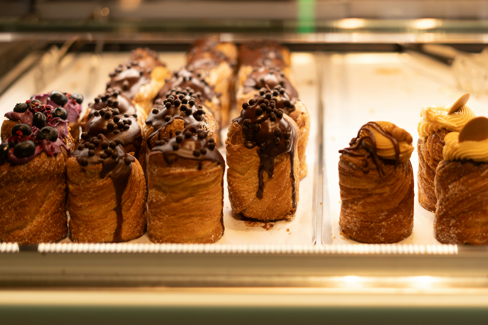
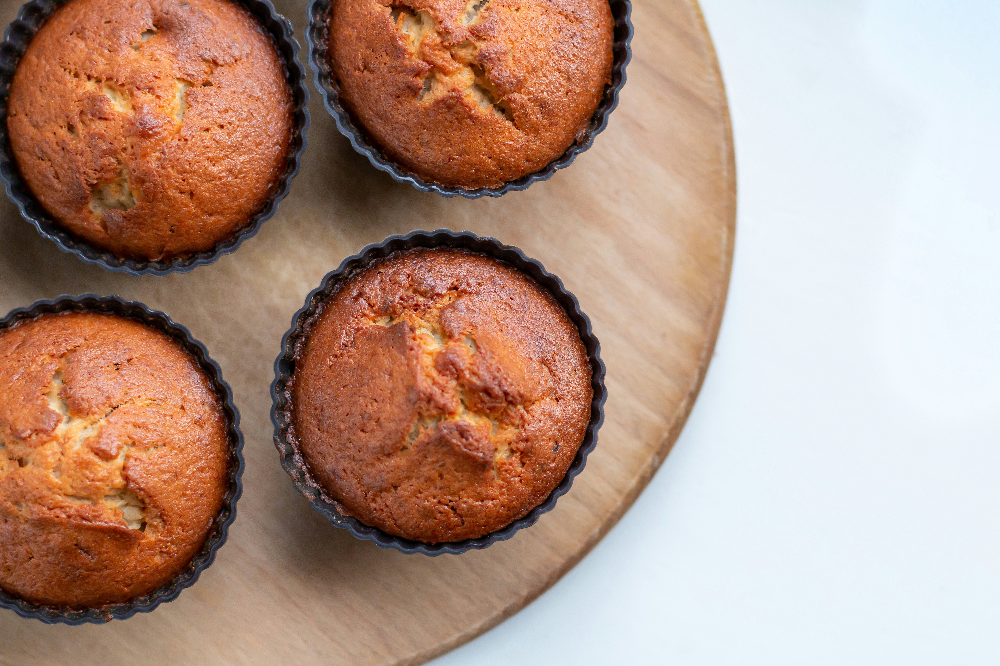
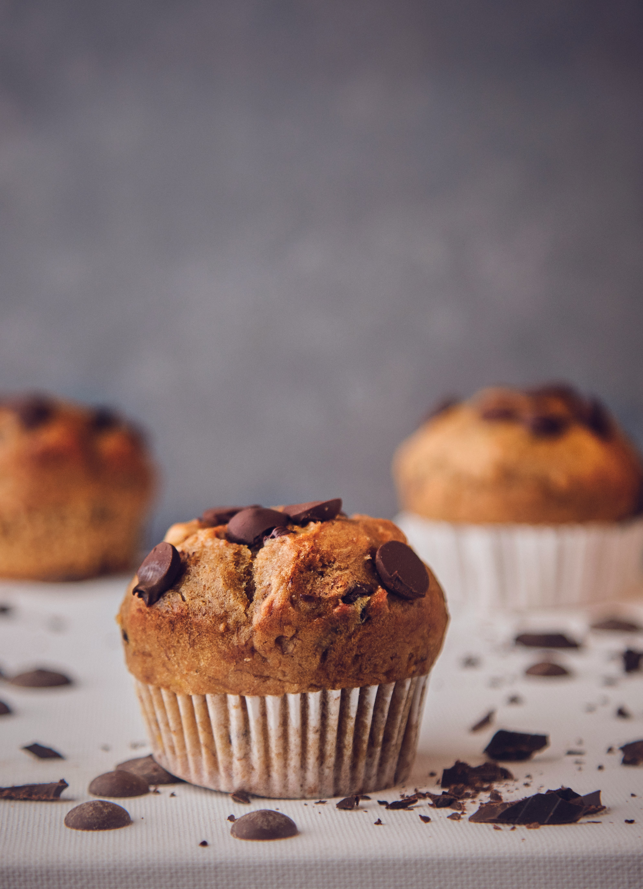
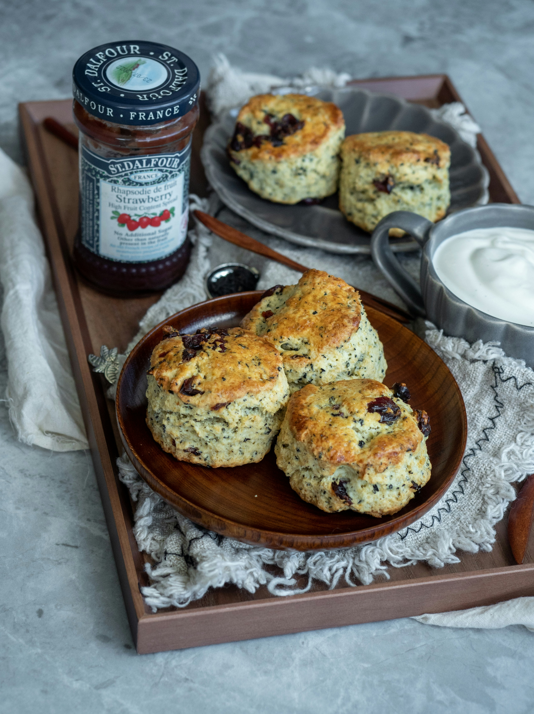
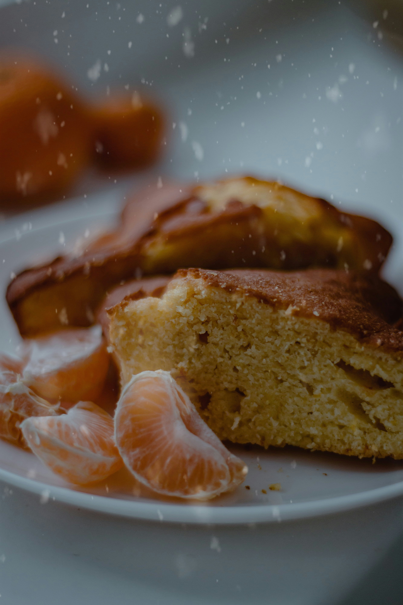
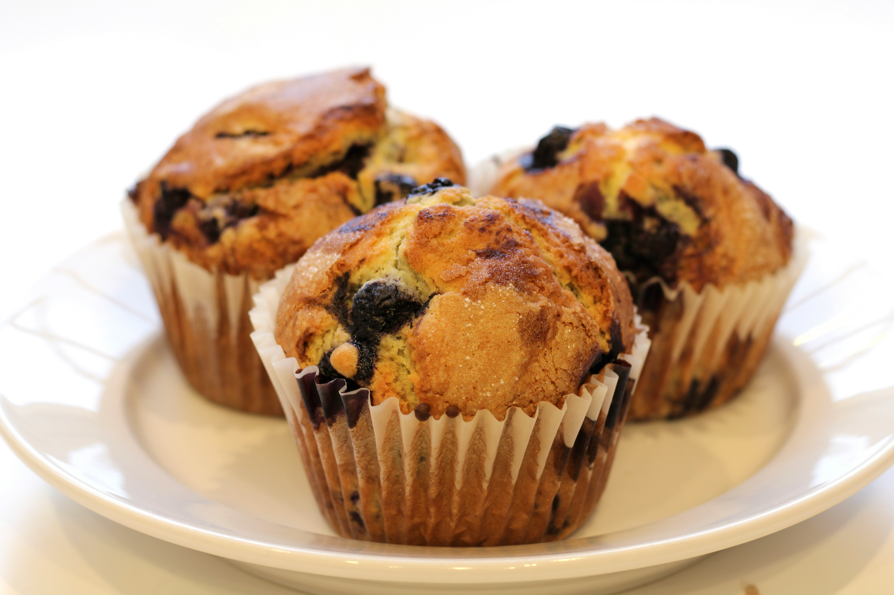

Cakes
We craft custom-designed cakes for all occasions, ensuring they not only look stunning but taste phenomenal.

We serve families, students, working professionals, and anyone who enjoys freshly baked goods. We cater to birthdays, celebrations, funerals, and special events within the local community.
We craft custom-designed cakes for all occasions, ensuring they not only look stunning but taste phenomenal.
Freshly baked bread with a crispy crust and soft center, perfect for breakfast or any family gathering.
From flaky croissants to sweet Danishes, our pastries are baked fresh every morning.

Gourmet muffins in multiple flavors baked fresh daily.

Have a specific vision? We work with you to create custom baked treats tailored exactly to your event's theme and size requirements.
Take a look at some of our mouth-watering creations through our photography gallery:





